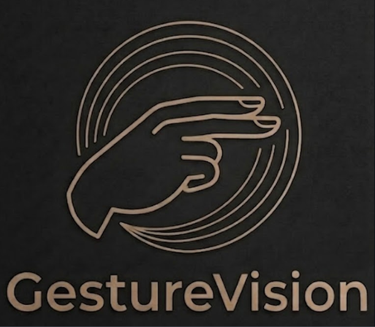
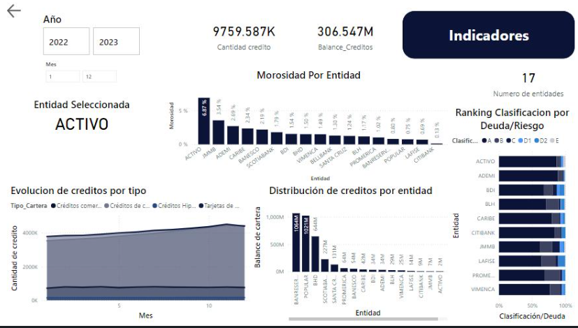

Professional Portfolio
I am a Data Scientist with a focus on ML Engineering, specialized in the complete cycle: from training and fine-tuning to the deployment of final applications. I focus on translating complex data into simple, high-impact, applicable solutions. My purpose is to build automation systems that deliver efficiency and operational value.
Mission
Tecnologist DataScience Student
"I'd focus my life on solving your problems with my knowledge, tools, and creativity. Let me give you a hand!"
Selected Works
This is the second Kaggle competition I am actively participating in. Unlike previous ones, this one emphasizes exploratory data analysis over the creation and implementation of Machine Learning models.

A computer vision-based automation tool that uses webcam gesture recognition to access configurable local keyboard shortcuts

The report analyzes the variables that affect significant events in some of the 17 multiple banks, focusing on their loan portfolios between 2022 and 2023. The data were collected from the Dominican Banking Market Information System (SIMBAD) and focuses on market development, comparing the behavior of some banks during the established periods.
Achievements
Top 20% Binary Prediction with a Rainfall Dataset - Kaggle Competition 2025
Top 40% Predict Podcast Listening Time minutes - Kaggle Competition 2025
Honorific Mention in NationalNASA Apps Competition - Mentor position, 2025 in Santiago, Dominican Republic
1st Place in First Lego League, Innovation Project National AWARD 2026 - Mentor Position